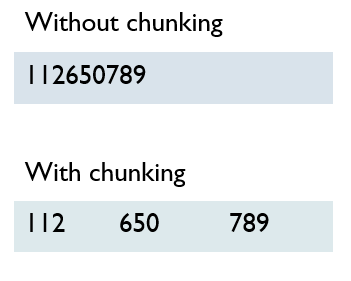

The Human as an Information Processor
Perceptual, cognitive and motor systems; vision, hearing and touch in UI design; sensory memory, STM (Miller's 7 ± 2, chunking) and LTM; cognitive load; attention; motor skills.
▶Lecture videos
Click any timestamp — here or inside the notes — to jump the video to that moment. Your position is remembered.
Human as an Information Processing Machine
The human as input–processing–output, senses, memory and cognitive limits.
00:01Humans: the core component of HCI01:39Designing interfaces humans can understand02:33The human as an information processor: input and output03:18Input channels: vision, hearing, touch06:22Sensory memory → short-term → long-term memory07:55Analysing sensory signals08:51Recognition: matching against long-term memory (familiar faces)10:30Processing and responding1The human as an information processing machine
HCI models the user as being like a computer, with three sub-systems:
- Perceptual system (INPUT)
- Cognitive system (PROCESSING)
- Motor system (OUTPUT)

| Sub-system | Role | Computer analogy |
|---|---|---|
| Perceptual | Receives stimuli through the senses (eyes, ears, skin) and buffers them in sensory stores | Input devices + buffer |
| Cognitive | Processes, recognises, reasons, comparing signals with experience from long-term memory | CPU + RAM + disk |
| Motor | Turns decisions into muscle actions: clicking, typing, speech, head movement, steering | Output devices |
- Input (perceptual): heat receptors in the fingertips detect intense heat.
- Processing (cognitive): the brain recognises danger and tissue damage and issues an urgent motor command.
- Output (motor): arm muscles contract instantly and the hand jerks away.
- Post-cognitive evaluation: memory directs follow-up actions, like running cold water or applying ointment.

2The senses in UI design
| 👀 Vision | 👂 Hearing | ✋ Touch (haptic) | |
|---|---|---|---|
| Nature | Directional: sharp foveal focus in the centre; peripheral vision detects movement and broad shapes | Non-directional (omni-directional): heard wherever the head is turned. Varies by pitch, timbre, volume | Needs direct physical contact: pressure, resistance, temperature, vibration |
| UI use | Critical content in the centre, secondary tools at the margins. The top-right corner is a known spot for alerts and profile toggles | Audio icons and chimes are great for urgent alerts | Personal and private: keyboard click-feel, phone vibration, VR haptic controllers |
| Caution | 1 in 12 men and 1 in 200 women are colour-blind. Never rely on colour alone for status | Overuse overwhelms users and disturbs bystanders | — |
3Human memory: three stores
| Store | What it is | Key facts |
|---|---|---|
| ⚡ Sensory memory (perceptual store) | Ultra-short buffer of raw impressions: iconic (visual), echoic (auditory), haptic | Decays in under 1 second. Paying attention moves data into working memory |
| 🧠 Short-term memory (STM / working memory) | Active scratchpad for immediate computation and decisions | Miller's Law: 7 ± 2 chunks in theory; realistically 4–5 items. Familiar items are kept far better than random strings |
| 💾 Long-term memory (LTM) | Permanent store, built from STM through rehearsal and repetition | Episodic: serial, autobiographical events (graduation day). Semantic: a structured network of facts, concepts, relationships, skills |
Press a button, memorise the sequence for 3 seconds, then type what you remember. Compare random letters with familiar chunks.
4Chunking & semantic networks
Chunking means grouping individual pieces of information into meaningful clusters. It greatly expands effective STM capacity without overloading it.

0112650301 (10 separate digits) is hard to hold. 011 – 265 – 0301 is only 3 chunks, so it's easy.
Semantic memory: a network in the mind
LTM doesn't store isolated strings. Semantic memory is an interconnected associative network of nodes (concepts), properties and inheritance hierarchies.

Example: "Animal" (breathes, moves) → "Bird" (has wings, can fly) → "Canary" (is yellow, sings). A canary inherits "can fly" from bird, so the fact doesn't need to be stored again.
5Cognitive load
Like a CPU with fixed RAM, the brain has finite cognitive capacity:
⚠️ Cognitive overload
Task complexity, visual clutter, stress and anxiety demand 100%+ of mental bandwidth, so error rates spike and performance drops sharply.
🥱 Cognitive underload
The task needs only about 30% of mental resources, so boredom sets in, leading to mind-wandering and attention drifting away.
When someone watches you work, performance anxiety and self-consciousness use up working memory. If the task itself needs a lot of resources, there isn't enough left, so you make errors in things you'd normally do easily. Try raising "Someone watching you" in the meter above.
6Attention: selective vs divided
| 🎯 Selective attention | 🔀 Divided attention (multitasking) | |
|---|---|---|
| Meaning | All focus on one task stream, filtering out background distractions | Capacity split across several simultaneous tasks or rapid switching |
| Result | Better performance | Every context switch has a mental "adjustment penalty", so quality drops |
| UI goal | Clean, distraction-free layouts that protect focus | Minimise unnecessary interruptions and notifications |
7Motor skills & physical ergonomics
Controls must fit human physical and biomechanical abilities:
| Principle | Explanation |
|---|---|
| 🎯 Hit target size and spacing | Make buttons large and well spaced to prevent accidental clicks. Don't put Close right next to Minimize |
| 🏎️ Context-dependent precision | Touch precision is high sitting at a desk but drops when walking, running or driving on bumpy roads |
| 📐 Fitts's Law | Time to reach a target depends on distance and target size. Large, close targets are faster and cause fewer motor slips (more in Week 9) |
Typical questions:
- "Explain the human as an information processor with an example" (the hot surface)
- "Describe the three memory stores"
- "What is Miller's law / chunking?"
- "Differentiate episodic and semantic memory"
- "Explain cognitive overload and underload"
Always link each one back to a UI design implication.
8Quick revision sheet
| Concept | Remember it as |
|---|---|
| 3 sub-systems | Perceptual (input) → Cognitive (processing) → Motor (output) |
| Vision | Directional; centre = critical; top-right = alerts; 1/12 men colour-blind |
| Hearing | Non-directional; good for alerts, but can annoy |
| Touch | Personal and private; vibration, key feel |
| Sensory memory | Iconic/echoic/haptic; < 1 s; attention moves it to STM |
| STM | 7 ± 2 (Miller); realistically 4–5; chunking helps |
| LTM | Episodic (events) vs semantic (facts network) |
| Chunking | 3–4 item groups, e.g. phone numbers |
| Cognitive load | Overload (100%+) → errors; underload (~30%) → boredom |
| Being watched | Anxiety uses working memory |
| Attention | Selective (better) vs divided (switching penalty) |
| Motor | Target size and spacing, context precision, Fitts's law |
?Self-check quiz
11 questions on this week. Answer them all, then press Check my answers. Your best and latest scores are saved and shown on the subject page.